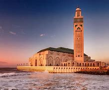
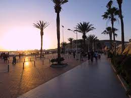
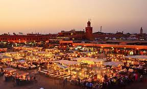
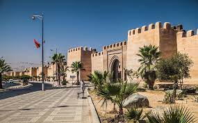
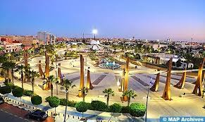
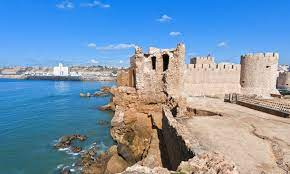

I) Définition.
.............................................. Le Maroc ( en amazighe : ⵍⵎⵖⵔⵉⴱ), ou, en forme longue, le royaume du Maroc, autrefois appelé Empire chérifien,
est un État unitaire régionalisé situé en Afrique du Nord1. Voici quelques informations sur le Maroc :
II) Capitale.
| rabat: |
|---|
III) Langues officielles.
............................................. Arabe et amazighe 
IV) Superficie totale.
............................................ 446 550 km² (hors Sahara occidental)
V) Population totale (2021).
............................................. 37 344 787 habitants (classé 40e)
VI) Religion la plus pratiquée.
............................................. Islam sunnite
VII) Diversité géographique.
............................................ Le Maroc compte des paysages diversifiés, du désert aux montagnes en passant par les plaines fertiles, qu’encadrent les côtes de 3 500 kilomètres.
............................................ Le Maroc est un pays riche en histoire, culture et diversité, avec une influence euro-méditerranéenne, arabe et africaine.
VIII) Les villes les plus célèbre au Maroc.
.........................................Rabat:

..........................................Casablanca:
..........................................Salé:
..........................................Tanger:
..........................................Titwan:
..........................................Oujda:
..........................................Agadir:

..........................................Marrakesh:

..........................................Taza:
..........................................Taroudant:

..........................................laayoune:

..........................................Ifran :

..........................................Fès:
..........................................Meknes:
..........................................Safi:
